숲
숲에 들어설 때마다 나무들은 저마다의 자리를 지키며 선명한 존재감을 드러낸다. 특히 소나무와 잣나무 숲 사이로
스며드는 빛과 바람, 솔잎의 향기는 언제나 마음을 맑게 한다. 이 곡은 그런 숲의 풍경을 통해
‘자신의 자리를 묵묵히 지켜내는 이들의 삶’을 음악으로 비춘 작품이다. 2022년 기타 독주로 발표되었으며, 이번
무대에서는 바이올린과의 이중주로 연주된다.
바다, 산
산을 오르는 길은 늘 오르막과 내리막, 고요와 험난함이 교차한다. 짙은 그늘을 지나 다시 빛을 마주하는 순간,
인간은 자연의 풍경 속에서 자신의 삶을 비춰보게 된다. 이 곡은 그런 산행의 여정을 음악으로 옮긴 작품이다.
기타의 선율은 산길의 오르막과 내리막을 지나 정상에서 마주하는 빛을 노래하며, 삶의 굴곡 끝에 피어나는 성취와
희망을 상징한다. ‘바다’는 끝없이 반복되는 파도의 리듬을 따라 흐르는 곡이다. 파도는 매번 같은 자리로
밀려오지만, 그 울림 속에는 다채로운 빛깔의 위로가 숨어 있다. 오래 바라보고 있으면 어느새 한 가지 진실만을
고요히 되뇌는 듯하다. 끊임없이 다가오고 물러서는 파도의 숨결은, 삶을 버텨내는 우리에게 변치 않는 어떤 답을
속삭이며 마음을 다독인다. 두 곡은 여행과 일상에서 얻은 풍경을 음악으로 번역한 연작 ‘음악적 풍경
(Musicscape)’의 일부로, 자연 속에 깃든 시간과 인간의 삶을 서정적으로 비춘 작품이다.
서(書)
이 곡은 서예의 호흡과 필법, 그리고 그 안에 담긴 정신에서 출발한다. 각 섹션은 붓의 획이 이어지듯 변화하면서도
끊김 없이 이어지며, 다양한 주법은 먹의 농담과 필선의 기세를 음악으로 번역한다. 〈서〉는 작곡가 최인이 과거
예술의전당 서예박물관에서 열린 기획전 최치원전에 참여하며 탄생했다. 그는 여러 분야 예술가들과 함께 최치원의
삶과 정신을 연구하고 답사한 뒤, 각자의 작품을 선보였고, 그 과정에서 이 곡을 완성했다. 서예라는 우수한 우리
문화에 대한 헌정이자, 동시에 최치원의 삶과 정신을 담아낸 작품이다. 글을 쓰기 전 호흡을 가다듬고 마음을 곧게
세우는 선비들의 태도에서 깊은 감동을 받아, 이를 음악으로 표현하고자 했다. 곡 속에는 우리 전통문화의 깊은
정신성과 그것을 알리고자 하는 작곡가의 열망이 깃들어 있다.
가던 길
나그네가 길 위에서 만나는 풍경과 사람들, 그리고 다시 떠나야 하는 순간에서 영감을 얻은 곡이다. 여정은 경기에서
정선, 태백과 삼척으로 이어지지만, 이 길은 단순한 여행이 아니라 삶 그 자체의 은유이기도 하다. 만남과 이별,
기쁨과 슬픔, 삶의 희로애락이 길 위에서 교차한다. 메나리조 선율은 각 지역의 정서를 담아 흘러가며, 그 선율 속에서
여행길은 인생의 궤적처럼 깊이를 더한다. 피리와 기타의 대화는 서로 다른 세계가 만나 부딪히고 어우러지며, 전통과
현대가 교차하는 순간에 새로운 울림을 만들어낸다. 이 곡은 나그네가 걸어가는 길이 결국 우리의 삶과 다르지 않음을
보여준다. 익숙한 듯 낯선 선율은 관객에게 자기 삶의 여정을 비추어 보게 하고, 음악 속에서 잔잔한 위로와 깨달음을
남긴다.
석풍수
건축가 이타미 준(유동룡)의 제주 건축 작품 〈석풍수〉에서 받은 인상으로 작곡된 곡이다. 하늘과 땅, 인간을 잇는
‘천지인(天地人)’의 사상과 제주의 바람·돌·물의 요소가 건축에 스며든 장면에서 깊은 감명을 받았다. 이 곡은 건축이
품은 철학과 공간을 직접 체험한 감각을 음악으로 전환한 작품이다. 기타의 울림은 바람과 돌, 물의 감각을 담아내며,
자연과 인간, 그리고 사람을 귀하게 여기는 건축가와 음악가의 따뜻한 마음이 만나 하나의 서정적 풍경으로 그려진다.
클래식기타에 대한 깊은 이해를 바탕으로 쓰인 이 곡은 연주 기법적으로도 완성도가 높으며, 기타의 울림을 통해
제주의 풍경과 건축, 그리고 인간의 정신이 교차하는 순간을 경험하게 한다.
DAWN
새벽의 첫빛이 어둠을 스미듯 밀어내며 공간을 물들이는 순간을 그린 곡이다. 긴 정적 속에서 서서히 살아나는 리듬과
선율은 하루의 시작, 그리고 마음의 각성을 상징한다. 잔잔하지만 단단한 에너지가 곡 전체를 이끌며, 조용한 여명 속에서
다시 한 번 스스로를 일으켜 세우는 힘을 노래한다.
공간 1,2,3
‘공간’은 물리적 장소가 아니라 감정이 숨 쉬고 사유가 머무는 내면의 자리를 뜻한다. 2016년에 시작된 이 연작은 이번
공연에서 기타, 바이올린, 첼로의 삼중주로 새롭게 편곡되어 선보인다. 1악장은 자유로운 흐름 속에서 움직임의 가능성을
탐색하고, 2악장은 내면의 회복과 감정의 확장을 통해 깊이를 더한다. 마지막 3악장은 변화와 성장의 완결로 닫히며, 세
악장은 서로 다른 결의 정서가 하나로 이어지는 감정의 지형도를 완성한다. 섬세한 음색과 여백의 울림이, 우리 안의
고요한 ‘공간’을 깨운다.
Who am A.I.
Who am I? Who am A.I.? 인간과 인공지능이 서로를 비추는 시대, 이 곡은 그 경계에서 태어났다. 입체음향과 전자적 질감이
교차하며 현실과 가상의 경계가 흐려지고, 그 안에서 악기들의 숨결은 인간만이 지닌 불완전함과 따뜻함을 들려준다.
인간과 기술이 서로의 거울이 되어가는 시대의 정체성 혼란을 드러내며, 기술이 인간을 닮아갈수록, 인간다움의 본질은
무엇으로 남는가… 그 물음에 대한 음악적 사유가 이 곡의 중심에 놓여 있다.
그림자의 경계에서
빛과 어둠이 맞물리는 경계의 순간, 우리는 그 어딘가에 서 있다. 삶의 불안과 내적인 갈등 속에서 음악은 중심을 잡고
의미를 찾아 나서며, 점층적으로 고조되는 리듬과 울림은 거대한 파도를 헤치며 다시 빛을 향해 나아가는 인간의 의지를
그려낸다. 이 곡은 불확실한 경계의 시대를 걸어가며, 빛을 향해 나아가는 모든 이들을 위한 응원의 노래다.
Blue Hour
해가 저물고 완전한 어둠이 오기 전, 세상이 푸른 빛으로 물드는 찰나의 시간. 모든 색이 머물다 사라지는 그 순간,
음악은 빛의 마지막 숨결을 따라 고요히 스며든다. 하루를 돌아보며 감사와 평온을 느끼게 하는 사색의 노래.
 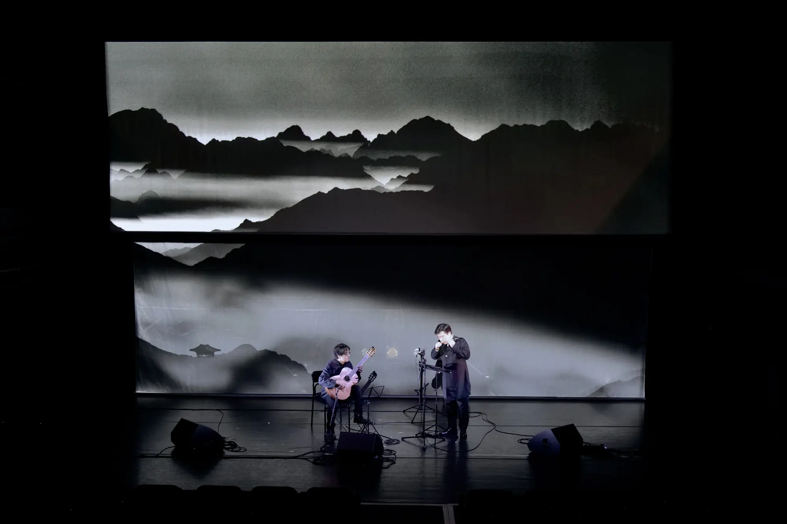
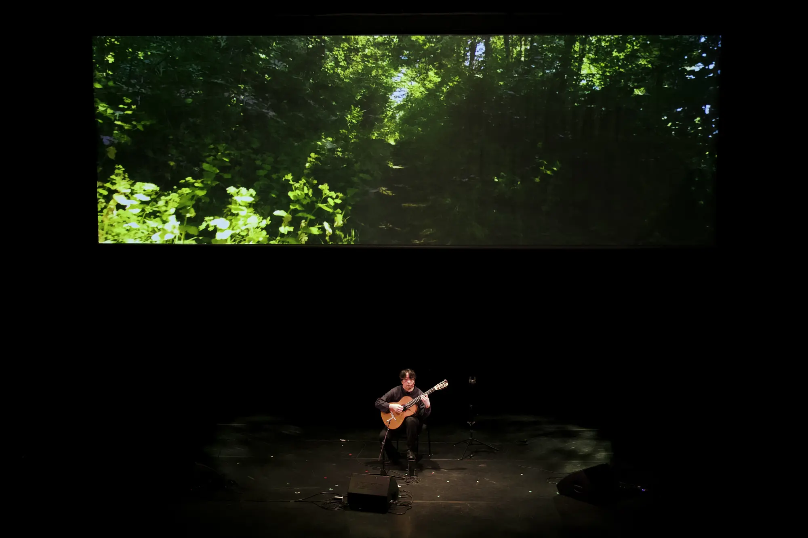
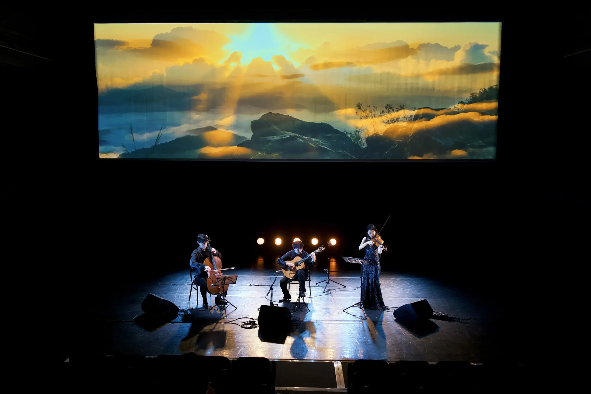
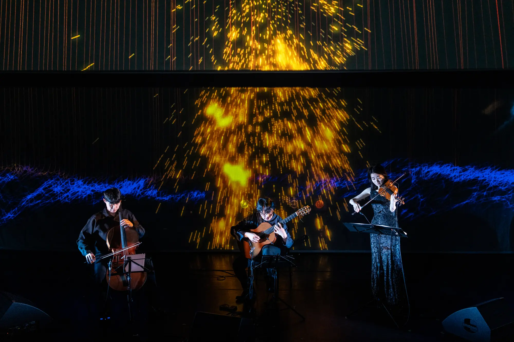
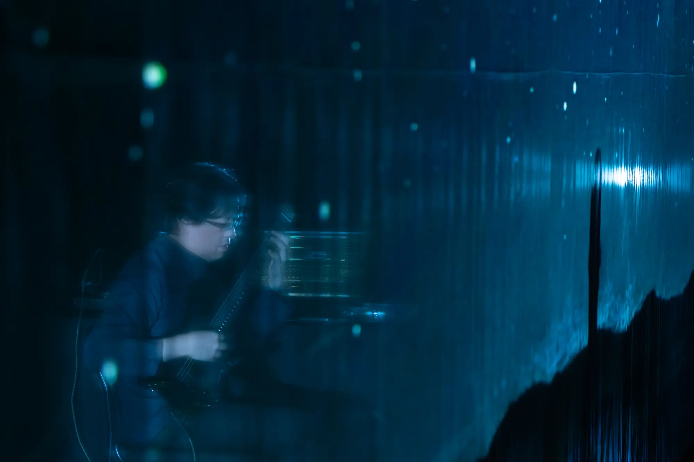
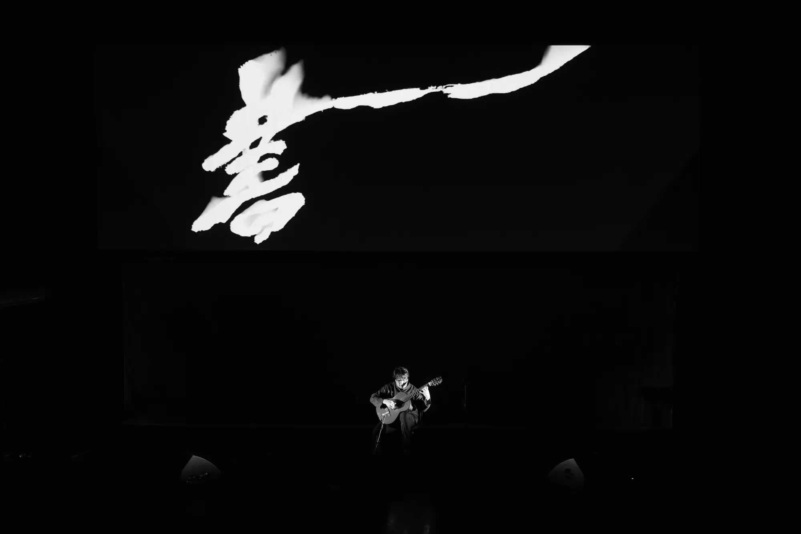
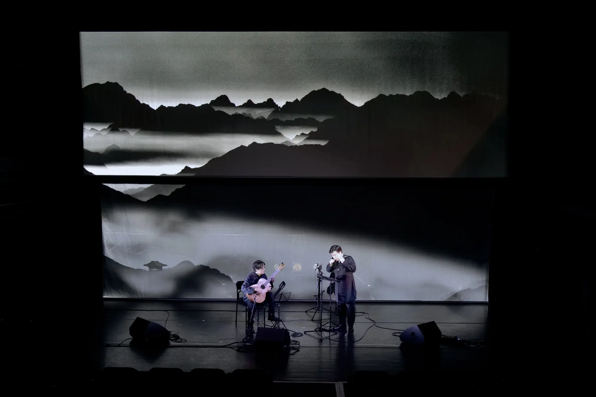
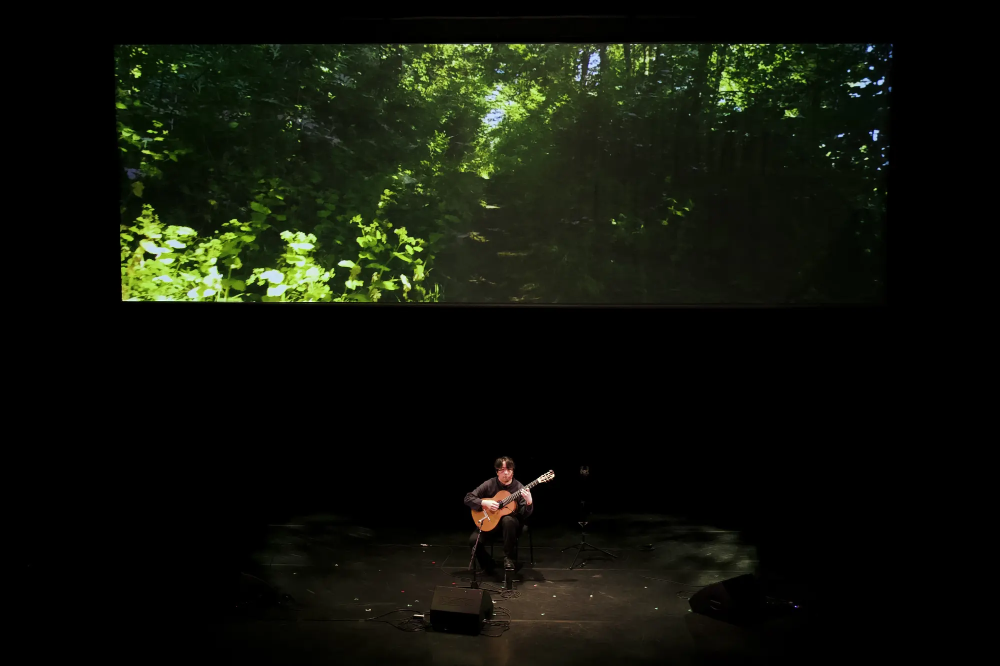
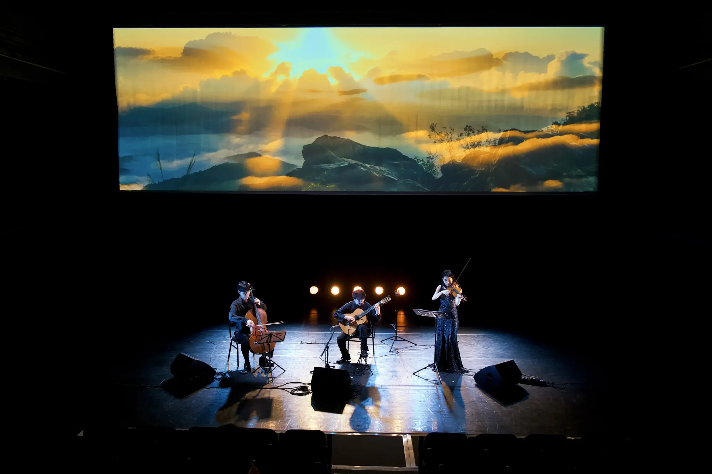
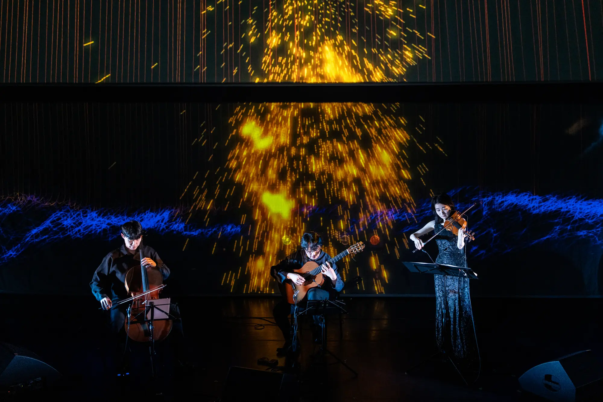
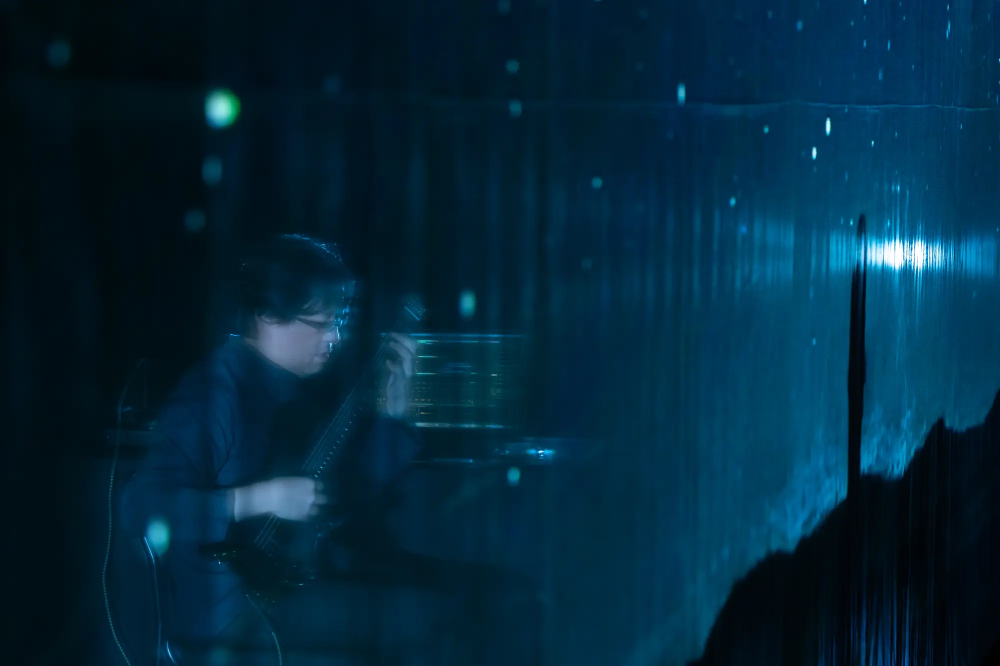
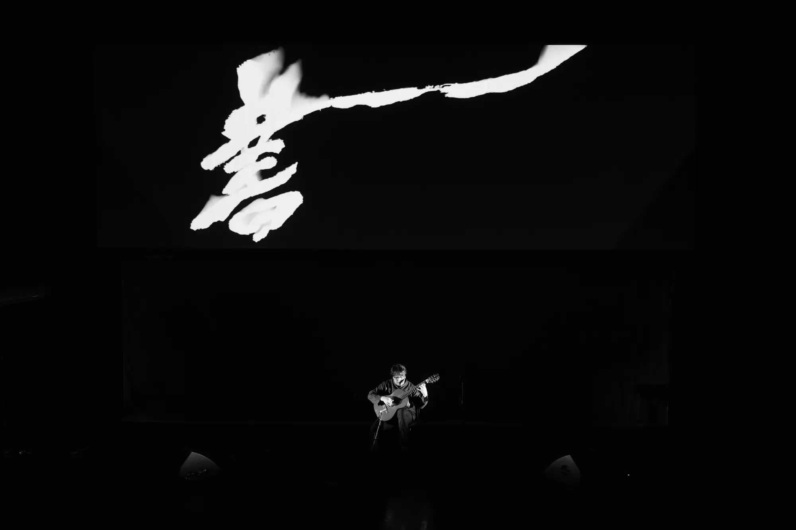
 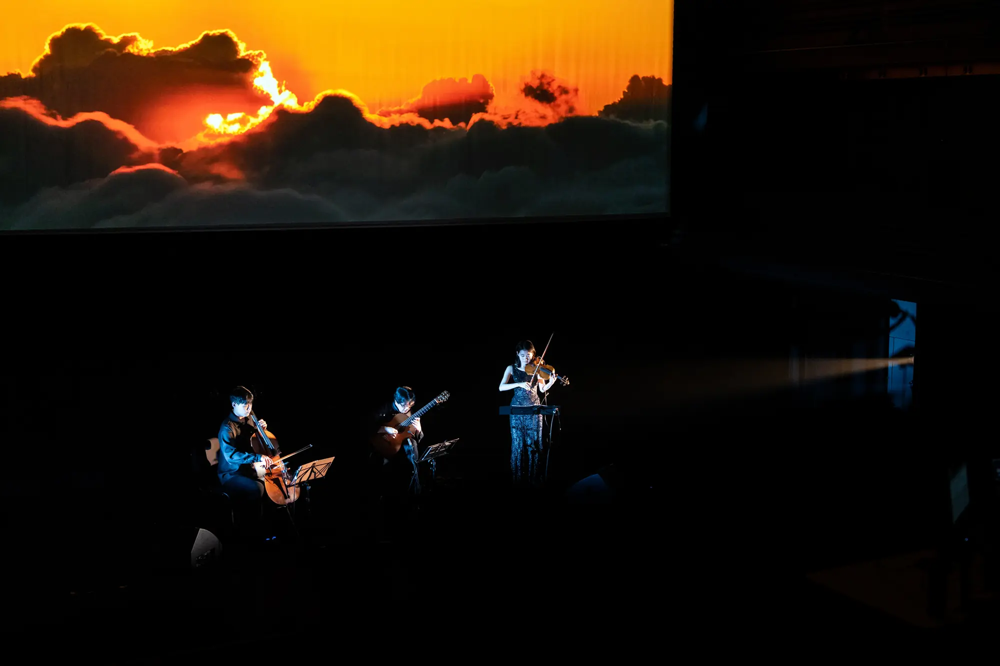
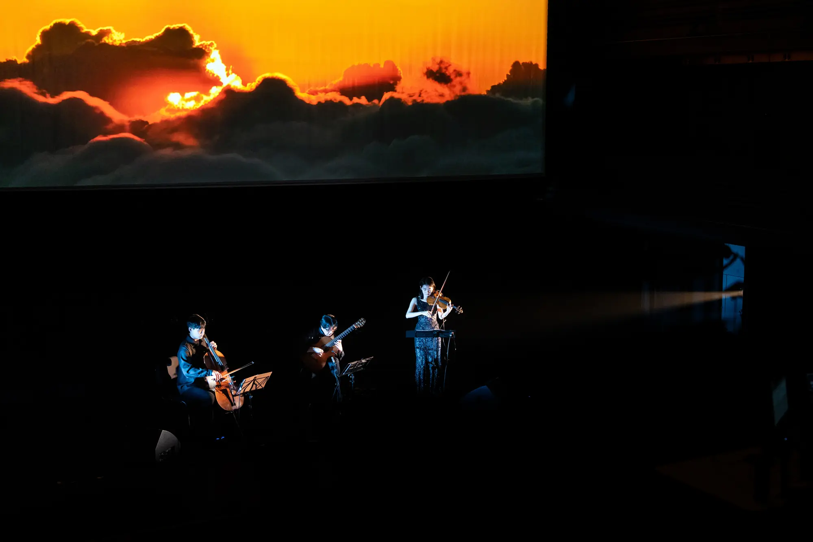